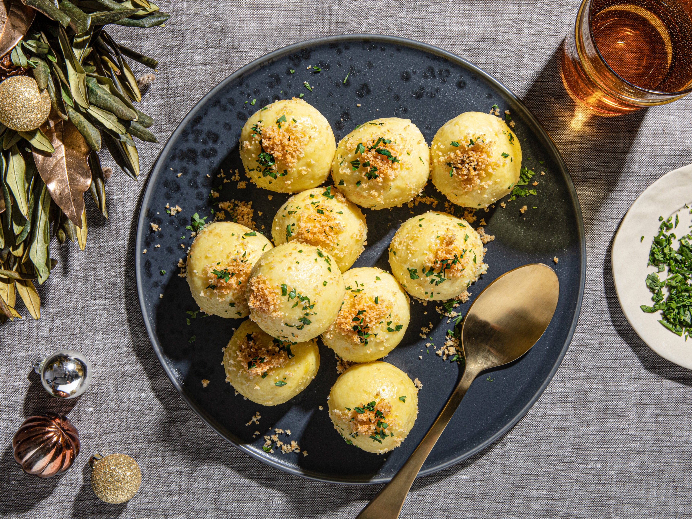

Kartoffelklöße or kartoffelknödel are traditional German potato dumplings that are consumed all over the country but are especially popular in Bavaria, Thuringia, and the Rhineland area. Depending on the variation, the dumplings may consist of cooked potatoes, raw potatoes, or a combination of both.
Meal prep time : 1 hour 25 minutes
Servings : 8